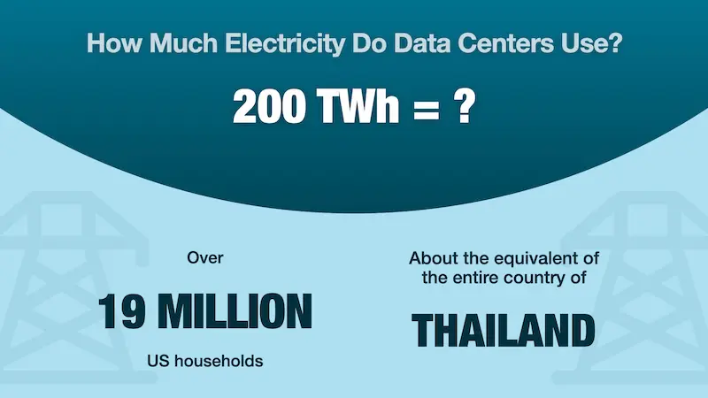
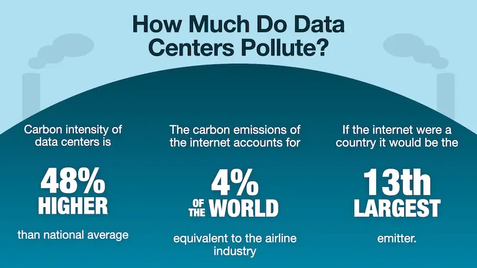
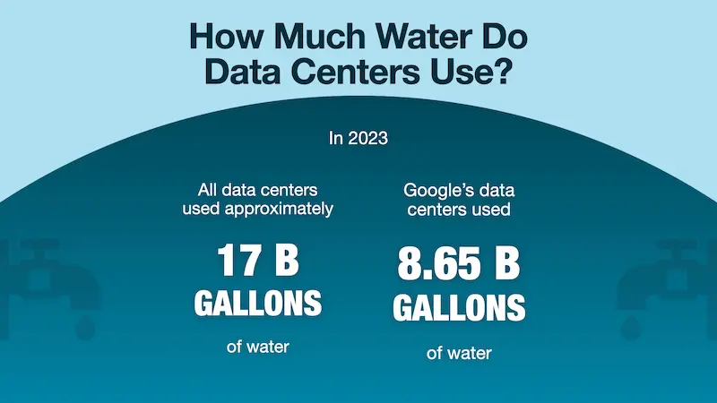
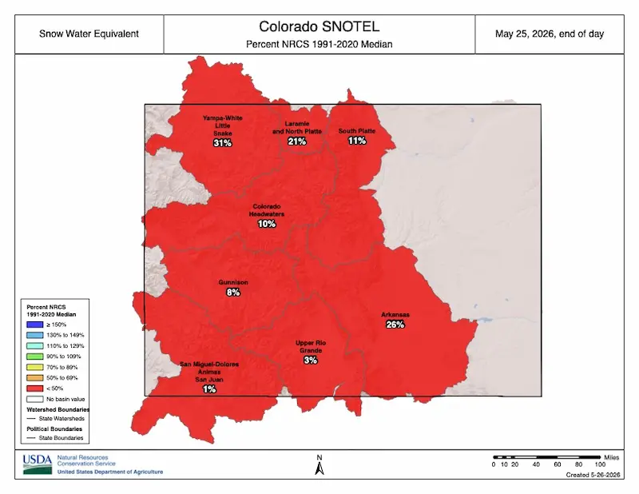

How Are Technologies Impacting the Environment?
Part 3: Eco-Conscious Marketing
July 24, 2026
In our previous post, we discussed the highly visible environmental costs of marketing: the plastic waste, the chemical pollution, and the resource extraction required for physical goods. As businesses have shifted from physical materials to digital platforms, our environmental impact doesn't disappear; it simply becomes invisible.
Today, we are pulling back the curtain on that invisible marketing engine.
The Myth of Going Paperless to Be Eco-Friendly
In modern marketing, we talk constantly about "the cloud." We upload our videos there, we host our websites there, and we store our customer data there. The word "cloud" evokes something light, airy, and harmless. It makes us feel better thinking we’ve wasted less paper by going digital.
The reality is much more grounded. The "cloud" is actually a global network of massive, physical properties known as data centers. These are essentially enormous external hard drives, housing thousands of servers that run the internet, process your emails, and host the digital content that makes your marketing possible.

The digital footprint of a modern business is represented by a staggering map of interconnected applications. From advertising and promotion tools to content creation, social media, commerce, data management, and the exploding category of AI-driven apps, our digital ecosystem is vast. Every single one of these apps on the map requires physical hardware, and that hardware lives in a data center.
The Energy-Hungry Reality of Data Centers
Data centers are massive infrastructure projects that require significant energy to operate 24 hours a day. There is a direct, three-level relationship between our marketing efforts and the energy they consume:
- The Content Level: The digital assets created by marketers and the energy used to send emails or host websites.
- The User Level: The energy required by your customers to interact with content on their own devices.
- The Network Level: The massive energy requirements of the internet backbone and the data centers that make the interaction possible.
The scale of this energy use is difficult to comprehend. In the United States alone, data centers used approximately 200 Terawatt-hours (TWh) of electricity in a single year. To put that in perspective, 200 TWh is enough to power roughly 19 million average US households, or about 7.5 times the entire population of Colorado. It is also roughly equivalent to the electricity usage of the entire country of Thailand.

This energy isn't just used for processing; it is also used for cooling. Data centers generate immense heat, often creating "heat islands" that can warm the surrounding land by up to 16 degrees Fahrenheit. This rising temperature affects the lives and environments of 340 million people.
Furthermore, much of this electricity is still generated by burning fossil fuels. Because the demand for data centers is growing so rapidly, utilities are struggling to keep up. In some regions, data centers are even bringing in their own gas power plants to ensure they have a constant supply. This contributes to a carbon intensity that is 48% higher than the national average.

The Water Crisis and the AI Accelerator
It isn't just the electricity that is being consumed at an unsustainable rate; it is also the water. Data centers require staggering amounts of water to keep their server components cool. In 2023, data centers used approximately 17 billion gallons of water.

This is particularly concerning in regions already facing water scarcity. For example, in Colorado, we are now dealing with record-low snowpacks and increasing drought conditions. When massive data centers compete for the same water supply needed for drinking water and agriculture, the stakes become incredibly high.

Now, we must address the elephant in the room: Artificial Intelligence.
While the digital footprint was growing long before the AI boom, AI is acting as a massive accelerator. AI-driven processes require specialized chips that consume 2 to 4 times more wattage than traditional computer chips. For instance, a single AI-powered internet search uses approximately 10 times more energy than a standard Google search.
When you scale that up to billions of searches every day, the impact is monumental. We are already seeing the consequences: many big tech companies have had to abandon their previous emissions goals because their total emissions are rising due to the massive energy demands of AI.
The transition from physical to digital hasn't eliminated our footprint; it has simply changed its form.